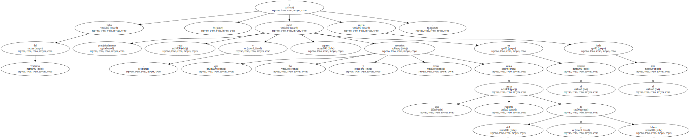
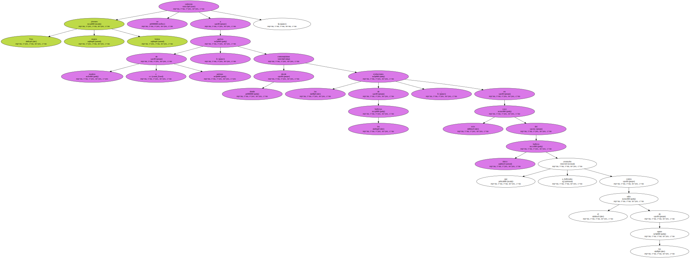
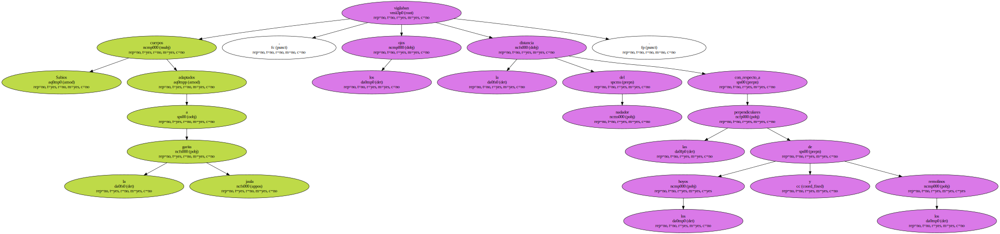
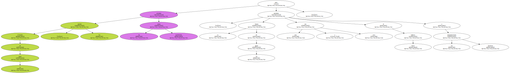
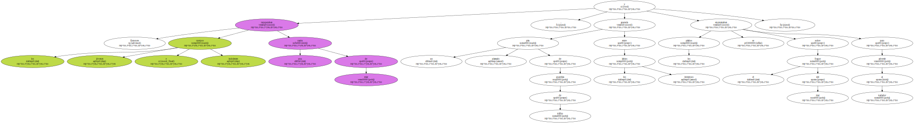
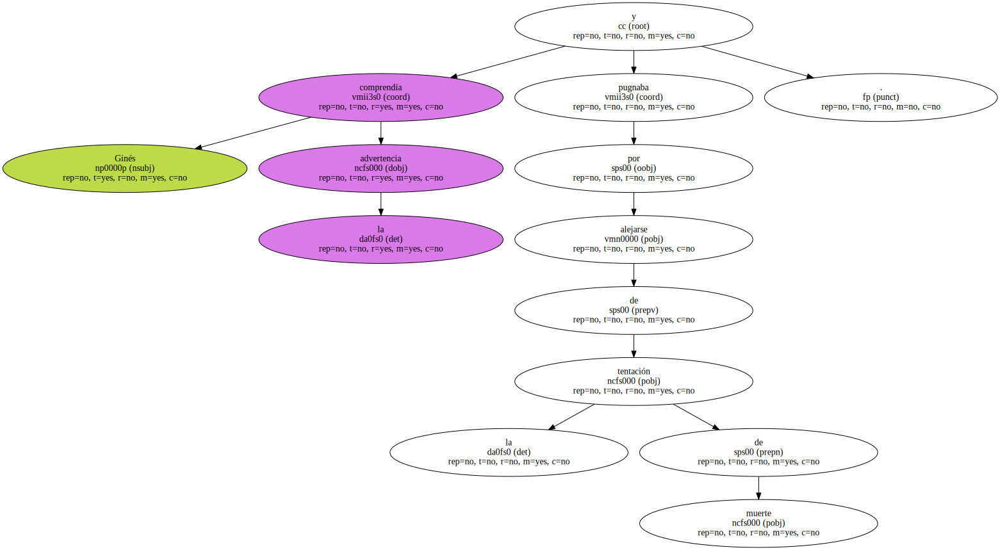
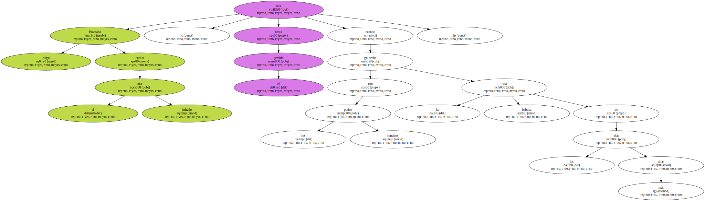
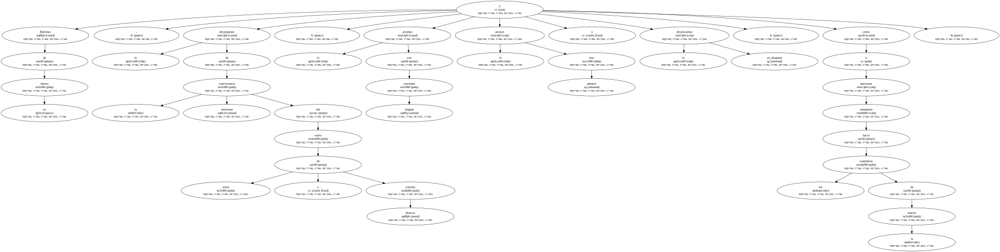
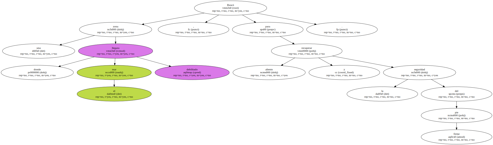
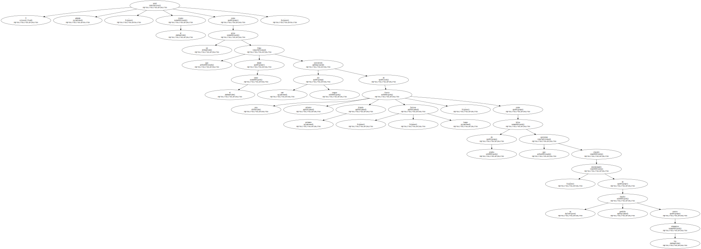

Salió del vestuario , metió precipitadamente ropa y zapatos revueltos en el armario y corrió hacia el mar , que iba y venía como una rugiente marea de añil y blanco.
Tres jóvenes negros lentos se subieron a garitas de madera y palmas , desde donde contemplaban las evoluciones de los bañistas , en este caso del único bañista que avanzaba a_bofetadas contra el odio de las aguas.
Sabios cuerpos adaptados a la garita jaula , los ojos vigilaban la distancia del nadador con_respecto_a las perpendiculares de los hoyos y los remolinos.
Clavados en la arena , los carteles avisaban las zonas prohibidas , pero la fuerza de las aguas acercaban una y otra vez al único bañista a las perpendiculares fatídicas.
Entonces los cuerpos jóvenes e indolentes recuperaban una razón de estar , un pito plateado de guardias de tráfico aparecía entre los labios inmensos y los pitidos se encaramaban sobre el fragor del mar para advertir al nadador.
Ginés comprendía la advertencia y pugnaba por alejarse de la tentación de muerte.
Braceaba ciego contra el mar irritado , reía hasta el gemido cuando golpeaba con los puños cerrados la cara babosa de las olas más altas.
Burlonas de su fuerza , le despegaban de la moviente consistencia del suelo de arena y conchas blancas , le alzaban con fingida suavidad y le atraían mar adentro o le desplazaban en_diagonal , como si quisieran empujarle hacia los sumideros de la muerte.
Buscó una zona donde el mar llegara debilitado , para recuperar aliento y la seguridad del pie firme.
Pero al levantar los ojos comprobó que el cielo azul había perdido la batalla contra las nubes y todo el mundo , él mismo quedaba a_cubierto de un toldo gris desesperante.

Y además , sonó el trueno como un aviso que llega desde el oeste convertido casi sin tregua en una lluvia caliente , primero blanda , luego furiosa , como hilos de piedra que quisieran clavarle , ensimismarle en su batalla perdida contra los elementos.
